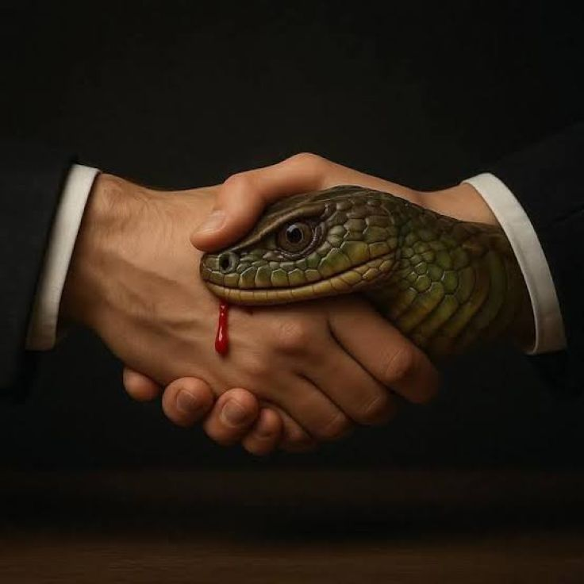

How one does not become vaishnava even in assosiation of Devotees?

Question : How one does not become vaishnava even in assosiation of Devotees?
Answer: A non vaishnava Is always attracted to another non vaishnava because of similar selfish qualities, such subordination and domination is just like mundane corporate alliance where both the servant and master work for their own happiness, where a vaishnava dealing, on the contrary is full of para-upakāra because a vaishnava of any degree is Paradukha-dukhi and samadriśta equal to all, because he has understood the truth and is fixed in it. Selfish non-vaishnavas lacking these qualities envy those who are actually servants of Śrī Gaurānga and defame them by accusing such divine souls and presenting fake humility, liberal thoughts and show of power which is fully opposite of a staunch vaishnava behaviour. But such dubious snakes, at the end die by the will of the Lord as by going against and speaking against of His devotees they actually defame the Lord himself and unknowingly they set Śrī Krsna as their Opponent. The Lord also enjoys to fight for his devotees but the chance of those unfortunate souls to get love of god-head gets spoiled, ultimately Śrī Krsna is Lord of our lives but these people they forget this truth and get busy in some mundane political chaos of igniting and extinguishing the fire by themselves, thus they waste their human form of life even after coming in association of the devotees.
Jay Śrīla Prabhupāda!
~ Admin